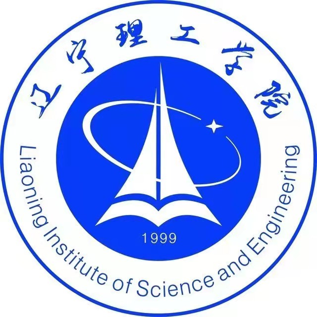
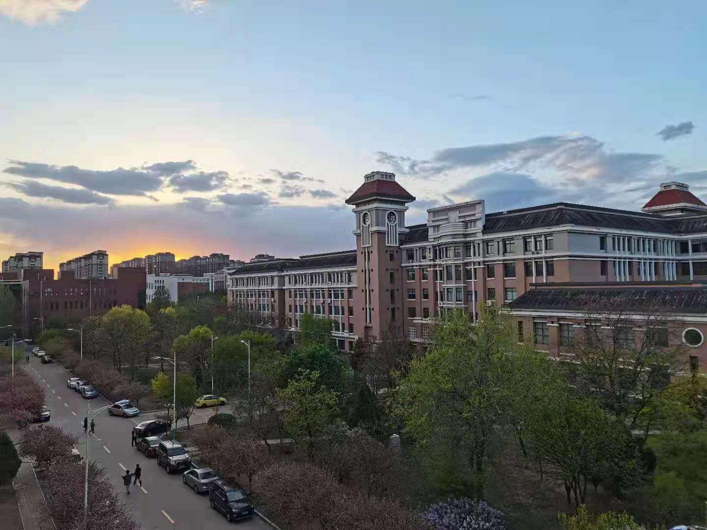
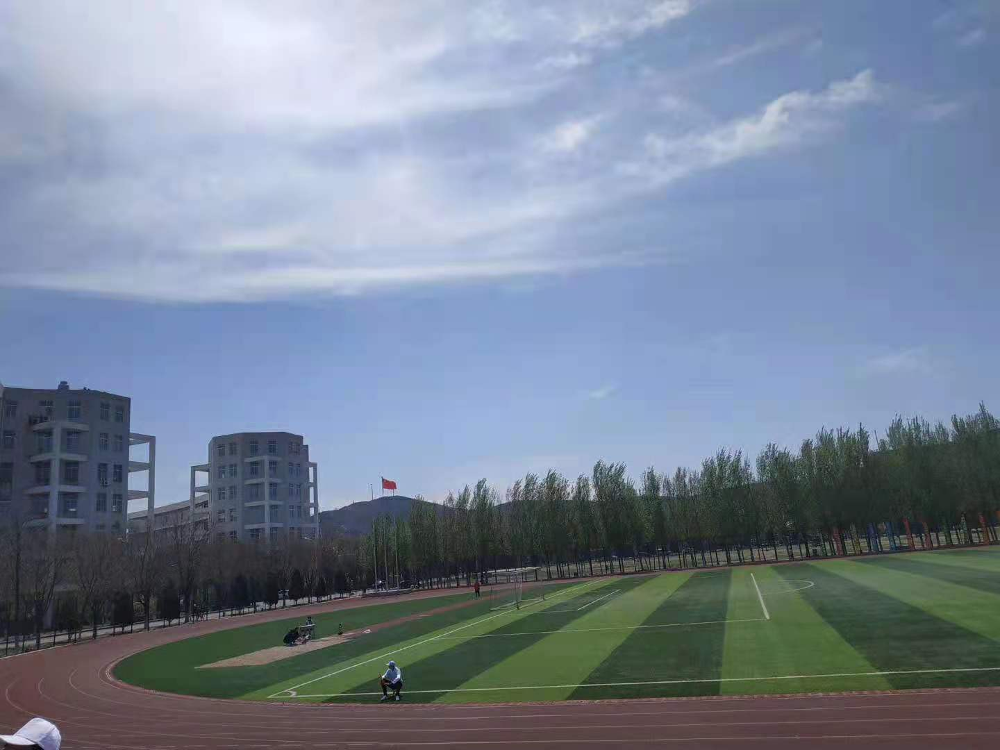
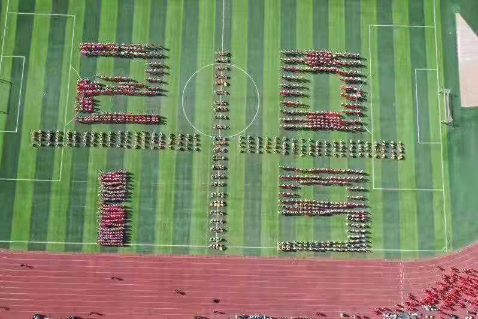

♦ 我的大学
第一次翻开大学录取通知书时，眼睛里有泪花在涌动，我知道， 这泪水不是咸的，而是苦尽甘来的甜。虽然我还是没能考上我理想的大学，但我还是很憧憬我的大学生活。
我的大学——辽宁理工学院
辽宁理工学院（Liaoning Institute of Science and Engineering），位于辽宁省锦州市，是经中华人民共和国教育部批准的民办全日制普通本科院校。辽宁理工学院前身始建于1999年7月，先后定名锦州师范学院渤海学院、锦州师范学院文理学部。2003年9月，锦州师范学院更名为渤海大学，学院随之更名为渤海大学文理学院，12月，学院被确认为民办独立学院。2014年5月，经教育部批准由独立学院转设为独立建制的普通民办本科学院—辽宁理工学院。截至2020年12月，学校占地593亩，校园占地面积39.58万平方米，总建筑面积18.16万平方米，教学、科研仪器设备资产总值4141.52万元，有校外实习、实训基地92个；设有教学科研单位12个，33个本科专业，2个专科专业；有专任教师279人，全日制在校生7453人。
  